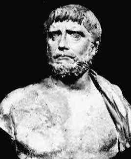

Thales von Milet

ca 625 v.Chr. - ca 546 v.Chr., Milet (heute in Türkei)
Thales von Milet gehört zur Gruppe der Sieben Weisen. Nach späteren hellinistischen Überlieferungen unternahm
er ausgedehnte Reisen, z.B. nach Ägypten. In Ägypten soll er die Höhe der Pyramiden aus deren Schattenlänge bestimmt
haben. Von dort soll er auch die Erkenntnis mitgebracht und erstmals streng formuliert haben, dass der Peripheriewinkel
im Halbkreis ein rechter Winkel ist (Satz des Thales → Peripheriewinkel mit 90°).
Danach heisst der Halbkreis über der Hypotenuse eines rechtwinkligen Dreiecks Thaleskreis.
Auch andere mathematische Sätze, die längst im Gebrauch waren, werden nach späteren Überlieferungen dem Thales zugeschrieben, so z.B.
Die Kreisfläche wird vom Durchmesser halbiert.
Im gleichschenkligen Dreieck sind die Basiswinkel gleich gross.
Zwei Dreiecke sind kongruent, wenn sie in einer Seite und den beiden anliegenden Winkeln übereinstimmen (WSW).
Auch andere mathematische Sätze, die längst im Gebrauch waren, werden nach späteren Überlieferungen dem Thales zugeschrieben, so z.B.
Die Kreisfläche wird vom Durchmesser halbiert.
Im gleichschenkligen Dreieck sind die Basiswinkel gleich gross.
Zwei Dreiecke sind kongruent, wenn sie in einer Seite und den beiden anliegenden Winkeln übereinstimmen (WSW).
Das einzige gesicherte Datum in seinem Leben scheint der 28.5.585 v.Chr. zu sein; er hatte für diesen Tag eine Sonnenfinsternis vorhergesagt. Dies wurde durch nachträgliche Berechnungen von Astronomen bestätigt.